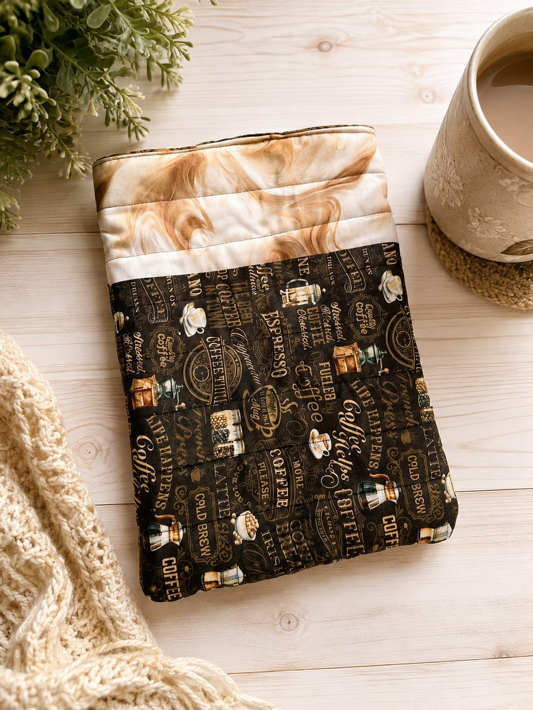

⤢ ZoomReading Nook Sleeve
$28.00
Somewhere soft for whatever you're in the middle of. Quilted and padded all the way round, so the rest of your bag stops pressing against the cover, and the top is left open on purpose — no button, no snap, nothing to undo when you've got one hand free and five minutes to read. The Daily Grind on the outside under a band of Cinnamon Marble, and a Toffee Windowpane lining that nobody but you will see.
12″ × 8.5″ · comfortably takes a hardback, a paperback or an e-reader · quilted and padded throughout · open top, no closure, so it slides out one-handed · The Daily Grind outside with a Cinnamon Marble band, lined in Toffee Windowpane · machine wash cold, hang to dry.
Ships from San Antonio, Texas · shipping & returns · San Antonio local? Choose Local pickup at checkout.
Pairs well with
One shipping fee per order, however much you add — and orders over $50 ship free.